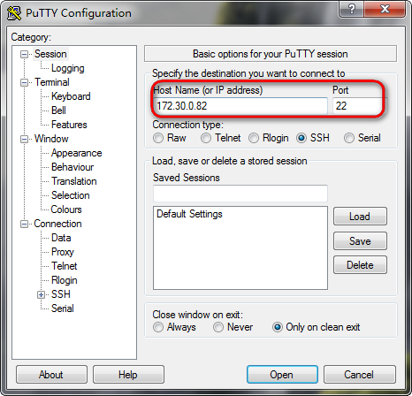
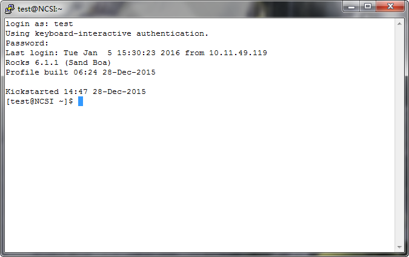
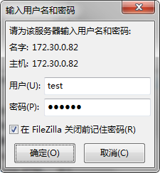
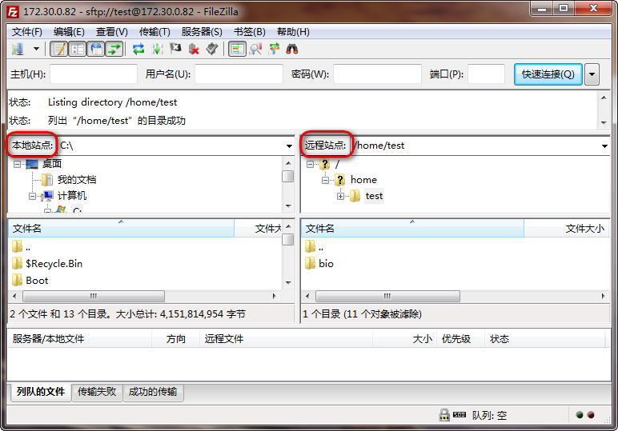
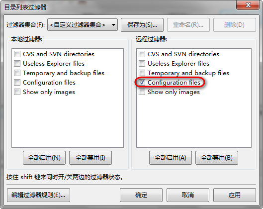
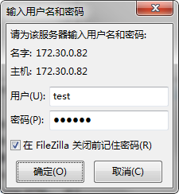
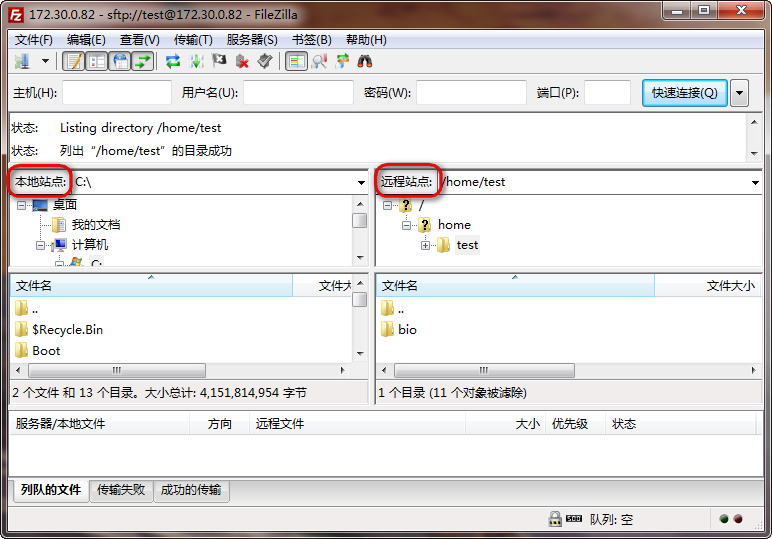
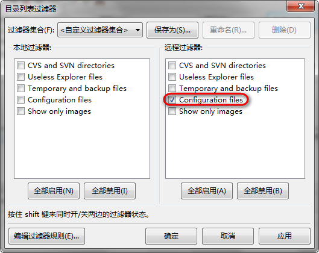

登陆服务器
Windows
Linux, Mac OS X
下载 PuTTY 登陆客户端，安装并运行，分别输入服务器 IP 地址和端口，点击下方 Open 按钮，根据提示依次输入用户名和密码，即可登陆服务器。
 
直接在终端输入 ssh 用户名@服务器地址，根据提示输入密码即可登陆服务器。
上传下载文件
下载 FileZilla 文件传输客户端，安装并运行，从文件菜单选择站点管理器，点击新站点，输入服务器 IP 地址，选择 SFTP 协议，登陆类型建议选择询问密码，点击下方连接按钮，根据提示输入用户名和密码，即可连接服务器进行文件上传或下载。
建议进行服务器文件名过滤设置，从查看菜单选择文件名过滤器，在远程过滤器下勾选 Configuration files，点击确定保存设置。
 





提交任务
任务脚本
终端任务
进行计算前，需要编写相应的任务脚本，一般可先下载示例脚本，修改并上传至服务器，然后在服务器终端输入 qsub 加任务脚本文件名将任务提交至计算服务器进行运算。
任务提交后系统分配任务编号，输入 qstat 命令查看任务状态，输入 qdel 加任务编号取消相应的计算任务。
登陆服务器仅用于任务提交管理、文件上传下载等服务，不允许直接在服务器终端输入命令进行计算，如果需要使用终端进行计算，可在服务器终端输入 qrsh 获得计算任务终端后，再输入命令进行计算。
Linux 命令
| 命令 | 作用 |
|---|---|
ls | 列出当前目录下内容 |
ls -al | 详细列出当前目录下所有内容 |
cd | 切换到家目录 |
cd dir | 切换目录到dir |
pwd | 显示当前目录路径 |
mkdir dir | 创建文件夹dir |
rm file | 删除文件file |
rm -r dir | 删除文件夹dir |
rm -f file | 强制删除文件file |
rm -rf dir | 强制删除文件夹dir |
cp file1 file2 | 复制文件file1到文件file2 |
cp -r dir1 dir2 | 复制文件夹dir1到文件夹dir2 |
mv file1 file2 | 重命名文件file1为文件file2 |
ln -s file link | 创建文件file的快捷方式到link |
touch file | 新建或更新文件file |
cat file | 显示文件file的内容 |
more file | 查看文件file的内容 |
head file | 显示文件file的前10行内容 |
tail file | 显示文件file的后10行内容 |
gzip file | 使用Gzip格式压缩文件file |
gunzip file.gz | 解压缩Gzip格式文件file.gz |
tar zcf dir.tar.gz dir | 使用Gzip格式压缩文件夹dir到dir.tar.gz |
tar zxf file.tar.gz | 解压缩Gzip格式文件file.tar.gz |
tar jcf dir.tar.bz2 dir | 使用Bzip2格式压缩文件夹dir到dir.tar.bz2 |
tar jxf file.tar.bz2 | 解压缩Bzip2格式文件file.tar.bz2 |
zip files.zip file1 file2 ... | 使用ZIP格式压缩文件file1 file2 ...到files.zip |
zip -r dir.zip dir | 使用ZIP格式压缩文件夹dir到dir.zip |
unzip file.zip | 解压缩ZIP格式文件file.zip |